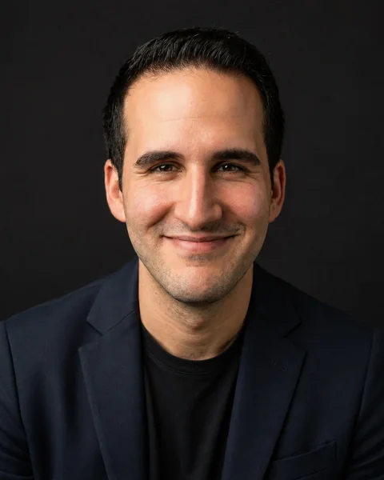

Kaygı ve sürekli düşünme
Olumsuz ihtimalleri tekrar tekrar düşünmek, karar vermekte zorlanmak veya belirsizlik yüzünden harekete geçememek.
Kaygı hakkında →Psikolog Ata Pamukçu · Online bireysel psikolojik danışmanlık
Online bireysel görüşmelerde sizi zorlayan durumların nasıl sürdüğünü birlikte inceler, günlük hayatınızda atabileceğiniz somut adımları belirleriz.
İlk mesajınızda yaşadığınız güçlüğü ayrıntılı biçimde anlatmanız gerekmez.
Akdeniz Üniversitesi Psikoloji mezunu

Olumsuz ihtimalleri tekrar tekrar düşünmek, karar vermekte zorlanmak veya belirsizlik yüzünden harekete geçememek.
Kaygı hakkında →Ne yapacağınızı bildiğiniz halde başlayamamak, hazır hissetmeyi beklemek veya hata yapmaktan korkmak.
Erteleme hakkında →Eleştirilme ya da yanlış bir şey söyleme korkusuyla konuşmaktan, buluşmaktan veya kendinizi ifade etmekten uzaklaşmak.
Sosyal kaygı hakkında →Bedensel belirtileri tehlike olarak yorumlamak, kontrolü kaybetmekten korkmak veya tekrar tekrar güvence aramak.
Panik hakkında →Duygu çökkünlüğü, travma sonrası tepkiler ve özgül korkular da çalıştığım konular arasındadır. Yaşadığınız güçlüğün adını koymuş olmanız gerekmez; uygunluğu ilk görüşmede birlikte değerlendirebiliriz.
Ücretsiz ilk değerlendirme
Şu anda sizi en çok zorlayan durumu, günlük hayatınıza etkisini ve şimdiye kadar neler denediğinizi konuşuruz.
Günlük hayatınızda neyin değişmesini istediğinizi somut örneklerle belirlemeye başlarız.
Nasıl çalışabileceğimizi, hedefleri, görüşme sıklığını ve devam görüşmelerinin ücretini konuşuruz.
Google Meet üzerinden 50 dakika. Görüşmenin sonunda devam etme zorunluluğunuz bulunmaz. Devam görüşmelerinin ücretlerini görün.
Psikolog Ata Pamukçu hakkında
Akdeniz Üniversitesi Psikoloji bölümünden mezun oldum. Bilişsel Davranışçı Terapi alanında ileri düzey terapi eğitimi ve mindfulness temelli terapi eğitimi aldım.
Online bireysel görüşmelerde güçlüğün günlük hayattaki işlevini anlamaya ve ihtiyaçlarınıza uygun, uygulanabilir bir çalışma planı oluşturmaya önem veriyorum.
Eğitimim ve çalışma yaklaşımım hakkında ayrıntılı bilgi →Yakın zamanda yaşadığınız bir örnekte ne olduğunu, düşündüklerinizi, bedensel tepkilerinizi ve nasıl karşılık verdiğinizi inceleriz.
Hedefinize göre kaçındığınız durumlara aşamalı yaklaşma, etkinlik planlama veya zor düşüncelerle araya mesafe koyma üzerinde çalışabiliriz.
Denediğiniz adımların nasıl gittiğini ve nerelerde zorlandığınızı konuşur, hedefleri ve çalışma planını birlikte düzenleriz.
Yaklaşımım davranış analizi, bilişsel davranışçı yöntemler, Kabul ve Kararlılık Terapisi (ACT) ve mindfulness çalışmalarından yararlanır. Yöntemleri değerlendirmenize ve ihtiyaçlarınıza göre seçeriz.
Görüşmeler yalnızca online, Google Meet üzerinden yapılır. İlk değerlendirme ve devam görüşmeleri 50 dakika sürer. Yüz yüze görüşme hizmeti bulunmaz.
Hayır. İlk değerlendirmeden sonra devam edip etmeyeceğinize karar verebilirsiniz. Bu görüşme, ihtiyacınızı ve birlikte çalışmanın uygunluğunu değerlendirmek içindir.
İlk 50 dakikalık değerlendirme ücretsizdir. Devam görüşmelerinde tek görüşme ücreti 3.000 TL, aylık dört görüşmelik çalışma planı 9.000 TL’dir. Görüşme sıklığını ihtiyaçlarınıza ve birlikte belirlediğimiz hedeflere göre planlarız.
Görüşme sayısı; yaşadığınız güçlüğe, hedeflerinize, ilerleme hızınıza ve yaşam koşullarınıza göre değişir. İlk değerlendirmede bir çalışma planı oluşturur, süreç içinde ilerlemeyi düzenli olarak gözden geçiririz.
Kendinizi rahatça ifade edebileceğiniz özel bir alan, çalışan bir kamera ve mikrofon ile istikrarlı bir internet bağlantısı yeterlidir.
Birçok durumda psikolojik danışmanlık psikiyatri takibiyle birlikte yürüyebilir. İlaç başlama, bırakma veya doz değiştirme kararları psikiyatri hekiminizin alanındadır.
İzniniz olmadan ses veya görüntü kaydı alınmaz. Görüşmelerde paylaştığınız bilgiler etik ilkeler ve yasal sınırlar içinde gizli tutulur.
Yetişkinlerle bireysel olarak çalışıyorum. Çift görüşmesi, çocuk ve ergen danışmanlığı veya acil psikiyatrik müdahale sunmuyorum. Farklı bir uzmanlık ya da destek biçimi gerekiyorsa ilk değerlendirmede uygun yönlendirme seçeneklerini konuşabiliriz.
Evet. Buradaki örnekler sık çalıştığım konuları gösterir. İlk değerlendirmede ihtiyacınızın bu çalışma biçimine uygunluğunu ele alırız. Farklı bir uzmanlık alanı gerekiyorsa uygun yönlendirmeyi konuşabiliriz.
Görüşme biçimi, ücret veya uygun günler hakkında yazabilirsiniz. İlk mesajınızda yaşadığınız güçlüğü ayrıntılı biçimde anlatmanız gerekmez.